R286 — stop at photographed dark separations
Preferred change for review: M, context-supported marker repair. It fixes the demonstrated P5 marker loss while preserving P2 exactly. B adds protected watershed interfaces, but can falsely split internal shading. A and C fail on independent central cases. Nothing is adopted into production.
Start with P5 and P2, then the independent failures. White + is a photographic centroid, never a physical bead center. Red barrier pixels are diagnostics; cyan fills are exact native support. Counts below are proposals, not verified beads.
Report · Root-cause diagnosis · Reproduction · Requirements · Full numerical evidence
Why S crossed P5
The two neighboring bright maxima were slightly outside a one-pixel hue gate. Their surrounding material was valid, but their markers vanished. All three regions therefore belonged to one watershed basin before merging. Brighter detours bypassed the direct dark valleys. Restoring context-supported markers fixes this demonstrated cause; lowering a saddle threshold alone would not.
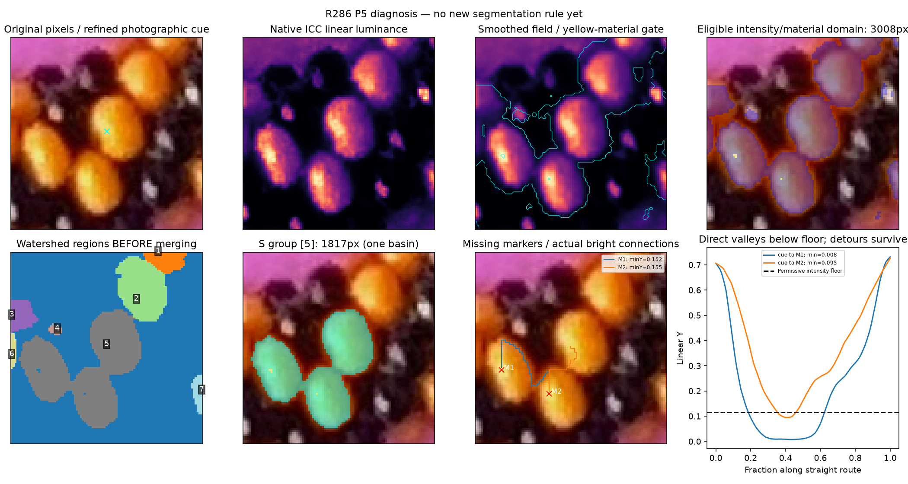
P5 — reviewed development
User: J acceptable, S merges yellows. Two real intensity maxima lost their markers at a single-pixel hue gate. M/B recover them, reduce 1817→664px and separate the target. A gives 665px; C leaves 777px and residual lobes.
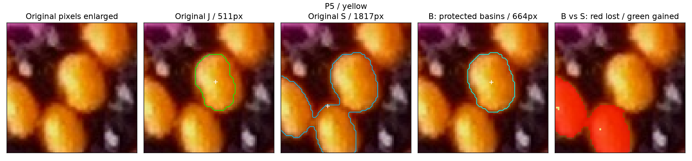
M and B are identical in all five reviewed cases. The compact strip labels B; the full comparison shows every method.
All methods, exact fills, brightness profiles and numbers
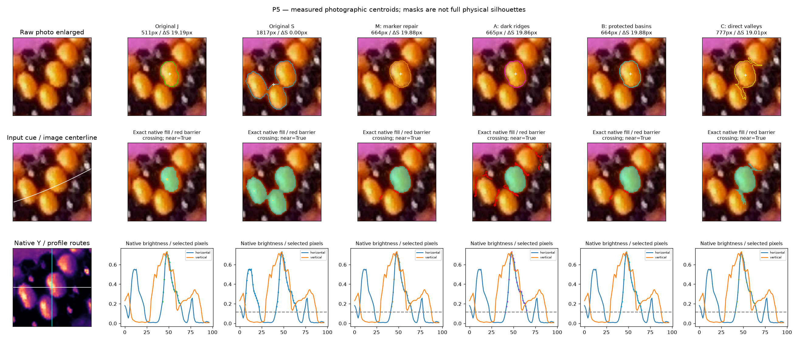
| Method | Native px | + / − vs S | Centroid ΔS | Boundary ∇Y | Geometry / status |
|---|
| J | 511 | +0 / −1306 | 19.19px | 0.0788 | crossing; unrated |
| S | 1817 | +0 / −0 | 0.00px | 0.0679 | crossing; area ceiling, domain unstable |
| M | 664 | +0 / −1153 | 19.88px | 0.0707 | crossing; unrated |
| A | 665 | +0 / −1152 | 19.86px | 0.0702 | crossing; unrated |
| B | 664 | +0 / −1153 | 19.88px | 0.0707 | crossing; unrated |
| C | 777 | +36 / −1076 | 19.01px | 0.0579 | crossing; unrated |
Exact native97 cropP2 — reviewed development
User: J poor, S good. M/A/B/C preserve all 495 S pixels exactly. Dim diffuse red survives beside the bright peak; J keeps only 200px.
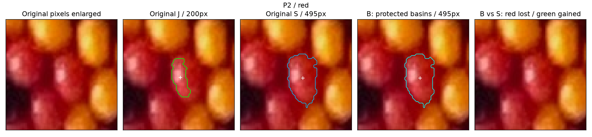
M and B are identical in all five reviewed cases. The compact strip labels B; the full comparison shows every method.
All methods, exact fills, brightness profiles and numbers
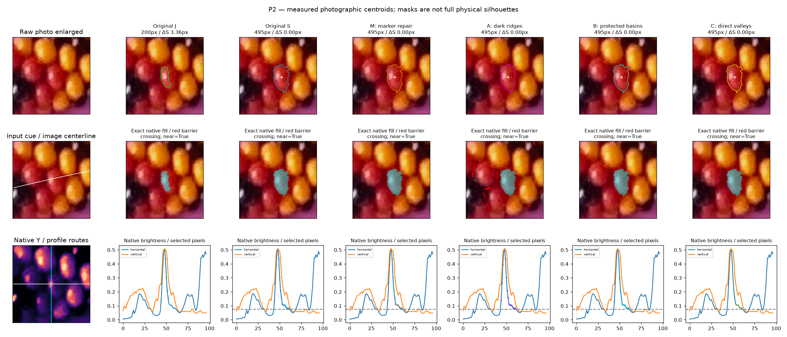
| Method | Native px | + / − vs S | Centroid ΔS | Boundary ∇Y | Geometry / status |
|---|
| J | 200 | +0 / −295 | 3.36px | 0.0370 | crossing; unrated |
| S | 495 | +0 / −0 | 0.00px | 0.0228 | crossing; unrated |
| M | 495 | +0 / −0 | 0.00px | 0.0228 | crossing; unrated |
| A | 495 | +0 / −0 | 0.00px | 0.0228 | crossing; unrated |
| B | 495 | +0 / −0 | 0.00px | 0.0228 | crossing; unrated |
| C | 495 | +0 / −0 | 0.00px | 0.0228 | crossing; unrated |
Exact native97 cropP1 — reviewed development
User: J better, S acceptable. M/B retain S’s 540px; no claimed improvement over preferred J. C expands the lower lobe. No thickness pruning.
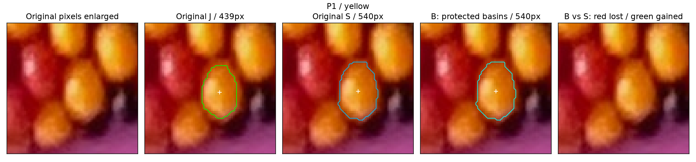
M and B are identical in all five reviewed cases. The compact strip labels B; the full comparison shows every method.
All methods, exact fills, brightness profiles and numbers
| Method | Native px | + / − vs S | Centroid ΔS | Boundary ∇Y | Geometry / status |
|---|
| J | 439 | +0 / −101 | 0.54px | 0.0549 | positive; unrated |
| S | 540 | +0 / −0 | 0.00px | 0.0483 | positive; unrated |
| M | 540 | +0 / −0 | 0.00px | 0.0483 | positive; unrated |
| A | 540 | +0 / −0 | 0.00px | 0.0483 | positive; unrated |
| B | 540 | +0 / −0 | 0.00px | 0.0483 | positive; unrated |
| C | 604 | +64 / −0 | 1.92px | 0.0388 | positive; unrated |
Exact native97 cropP3 — reviewed development
User: J better, S slightly worse. M/B equal S (446px), so the preferred J boundary remains an unresolved advantage. C adds a tail/notch rather than solving it.
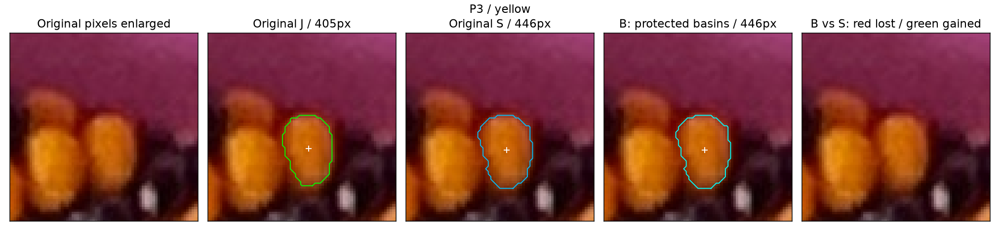
M and B are identical in all five reviewed cases. The compact strip labels B; the full comparison shows every method.
All methods, exact fills, brightness profiles and numbers
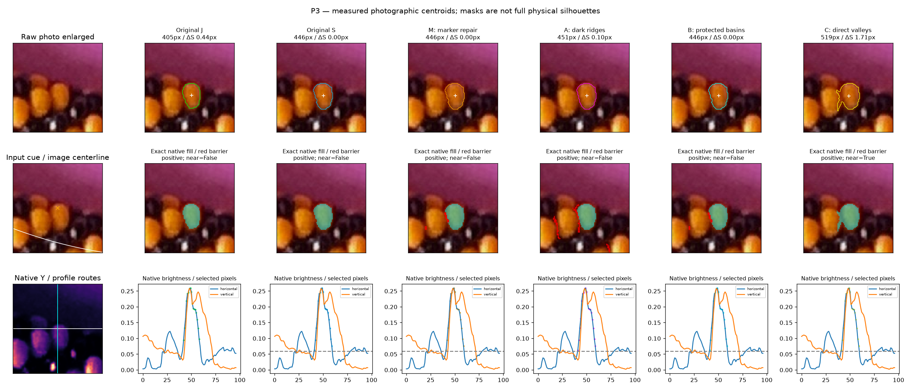
| Method | Native px | + / − vs S | Centroid ΔS | Boundary ∇Y | Geometry / status |
|---|
| J | 405 | +0 / −41 | 0.44px | 0.0347 | positive; unrated |
| S | 446 | +0 / −0 | 0.00px | 0.0338 | positive; unrated |
| M | 446 | +0 / −0 | 0.00px | 0.0338 | positive; unrated |
| A | 451 | +5 / −0 | 0.10px | 0.0327 | positive; unrated |
| B | 446 | +0 / −0 | 0.00px | 0.0338 | positive; unrated |
| C | 519 | +73 / −0 | 1.71px | 0.0310 | positive; unrated |
Exact native97 cropP4 — reviewed development
User: J bad, S acceptable. M/B retain S’s 320px and separate the visible neighbors. Edge case: secondary priority; no central tradeoff was made.
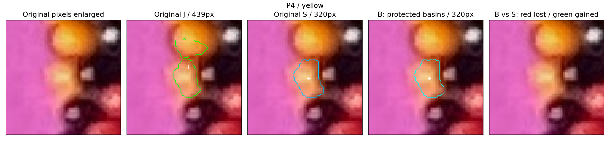
M and B are identical in all five reviewed cases. The compact strip labels B; the full comparison shows every method.
All methods, exact fills, brightness profiles and numbers
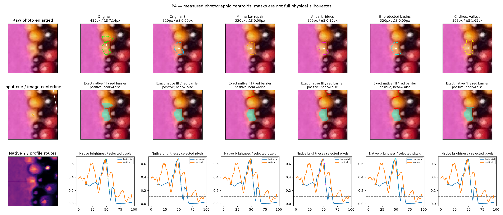
| Method | Native px | + / − vs S | Centroid ΔS | Boundary ∇Y | Geometry / status |
|---|
| J | 439 | +167 / −48 | 7.14px | 0.0461 | positive; unrated |
| S | 320 | +0 / −0 | 0.00px | 0.0444 | positive; unrated |
| M | 320 | +0 / −0 | 0.00px | 0.0444 | positive; unrated |
| A | 325 | +5 / −0 | 0.19px | 0.0432 | positive; unrated |
| B | 320 | +0 / −0 | 0.00px | 0.0444 | positive; unrated |
| C | 363 | +43 / −0 | 1.65px | 0.0483 | positive; unrated |
Exact native97 cropFrozen independent confirmation
Ten regions selected before new outputs: eight central, two clear-edge. All52 nearby cues survive, including weak and fresh cues. M/B preserve all10 selected anchor supports exactly. Unrated does not mean accepted. J/S lack the new full perturbation protocol, so their apparent flag counts are not comparable.
| Candidate | Flagged /52 | Domain-sensitive | Illumination-sensitive | Mean ΔS | Near central proposals* |
|---|
| M | 9/52 | 9 | 1 | 0.00px | 29 |
| A | 14/52 | 12 | 2 | 5.74px | 24 |
| B | 8/52 | 6 | 2 | 0.59px | 29 |
| C | 8/52 | 6 | 1 | 5.06px | 29 |
*Unflagged support-near observations before deduplication, not physical beads. M/B:29 central near proposals form25 overlap groups across eight crops; weak ownership remains unresolved. Eight fresh cues include three flagged supports and five overlapping old proposals; no new distinct bead is established.
C01 — central-crossing-red
Central red: all M/B anchor pixels equal S; J truncates diffuse material. Weak fresh cue elsewhere in this crop still exceeds the area ceiling.
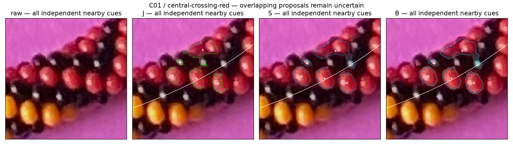
Anchor alternatives, all-cue atlas, profiles and native crops
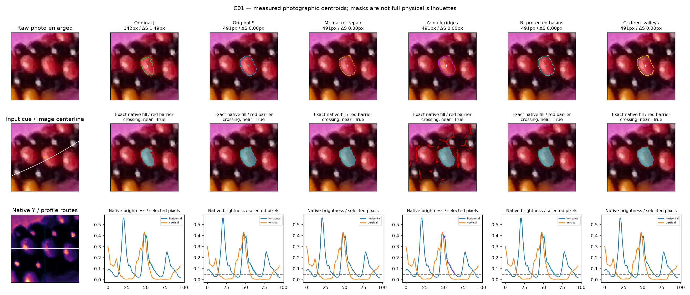
| Method | Native px | + / − vs S | Centroid ΔS | Boundary ∇Y | Geometry / status |
|---|
| J | 342 | +0 / −149 | 1.49px | 0.0379 | crossing; unrated |
| S | 491 | +0 / −0 | 0.00px | 0.0328 | crossing; unrated |
| M | 491 | +0 / −0 | 0.00px | 0.0328 | crossing; unrated |
| A | 491 | +0 / −0 | 0.00px | 0.0328 | crossing; unrated |
| B | 491 | +0 / −0 | 0.00px | 0.0328 | crossing; unrated |
| C | 491 | +0 / −0 | 0.00px | 0.0328 | crossing; unrated |
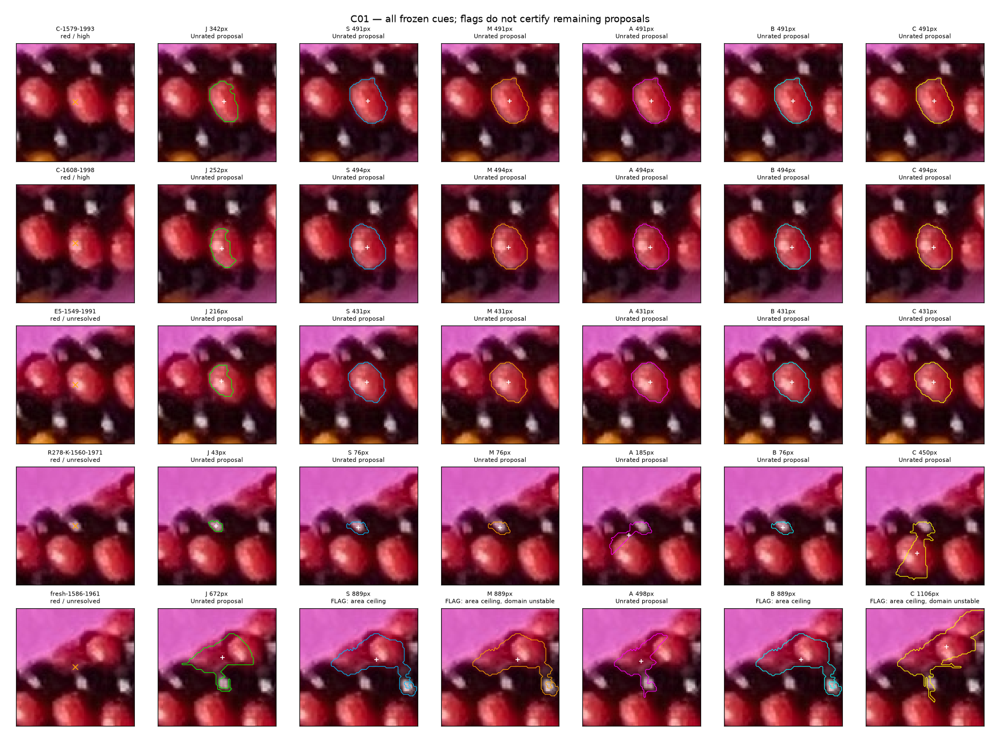
Native97 anchor · Native161 groupC02 — central-crossing-red
Central red anchor remains577px in M/B. C grows806px. A separate weak interstice cue merges neighbors in M/S; B reduces it to131px but is illumination-sensitive. Do not certify that tinted highlight as a red bead.
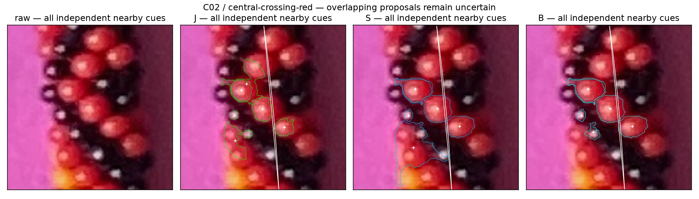
Anchor alternatives, all-cue atlas, profiles and native crops
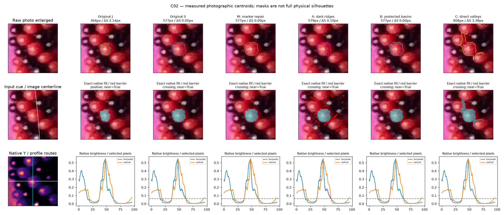
| Method | Native px | + / − vs S | Centroid ΔS | Boundary ∇Y | Geometry / status |
|---|
| J | 364 | +0 / −213 | 2.14px | 0.0369 | positive; unrated |
| S | 577 | +0 / −0 | 0.00px | 0.0256 | crossing; unrated |
| M | 577 | +0 / −0 | 0.00px | 0.0256 | crossing; unrated |
| A | 579 | +3 / −1 | 0.10px | 0.0256 | crossing; unrated |
| B | 577 | +0 / −0 | 0.00px | 0.0256 | crossing; unrated |
| C | 806 | +229 / −0 | 3.38px | 0.0243 | crossing; unrated |
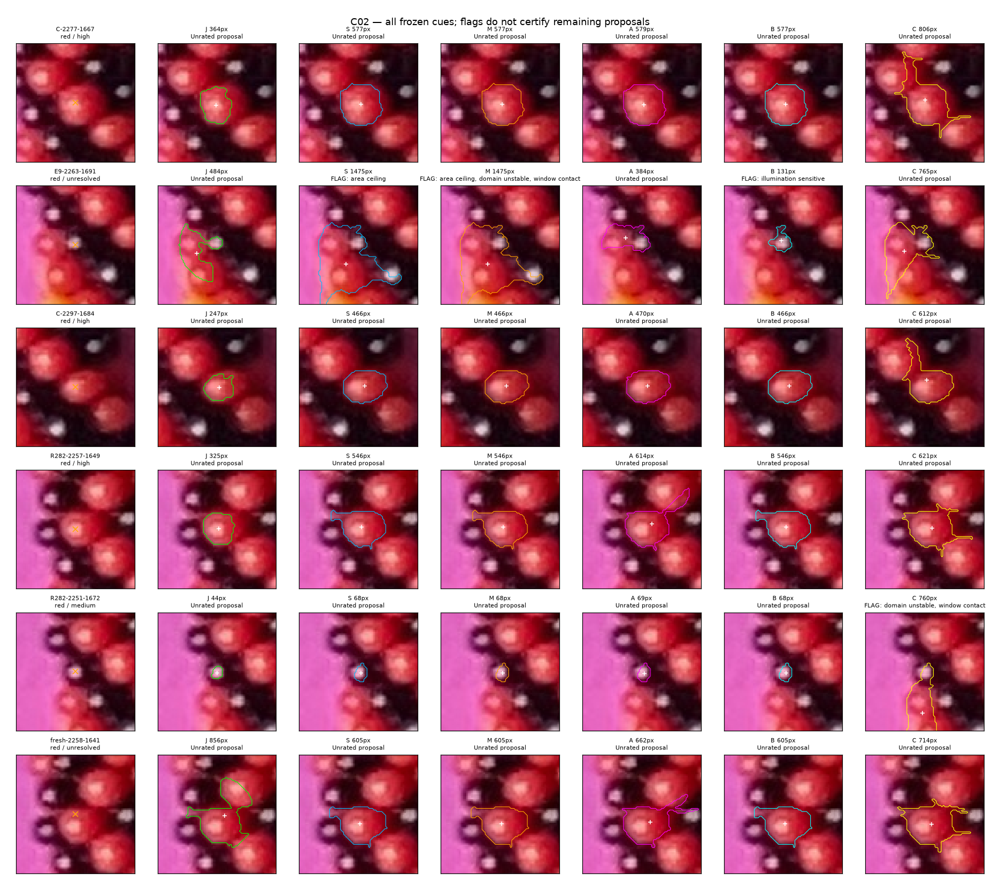
Native97 anchor · Native161 groupC03 — central-crossing-yellow
Central yellow anchor remains596px in M/B. A extends a thin route toward the lower-left yellow; C adds neighboring material. B’s separate92px edge/interstice proposal remains color/identity uncertain.
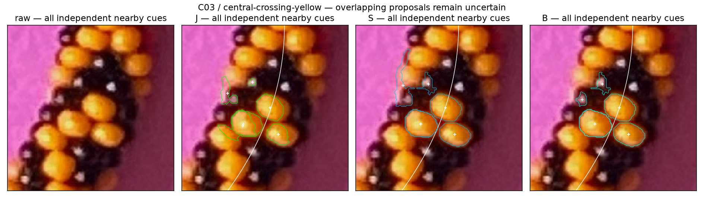
Anchor alternatives, all-cue atlas, profiles and native crops
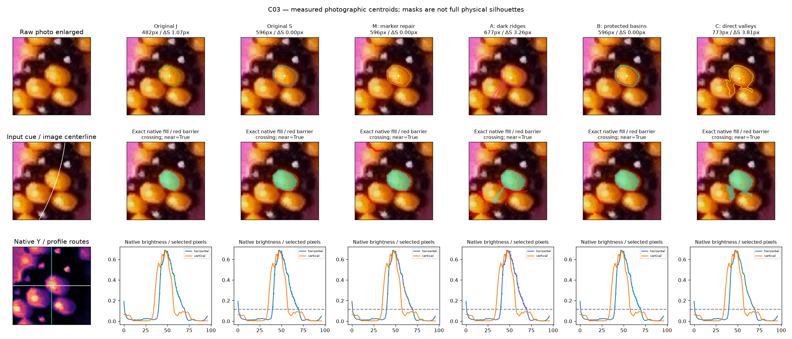
| Method | Native px | + / − vs S | Centroid ΔS | Boundary ∇Y | Geometry / status |
|---|
| J | 482 | +0 / −114 | 1.07px | 0.0787 | crossing; unrated |
| S | 596 | +0 / −0 | 0.00px | 0.0623 | crossing; unrated |
| M | 596 | +0 / −0 | 0.00px | 0.0623 | crossing; unrated |
| A | 677 | +81 / −0 | 3.26px | 0.0543 | crossing; unrated |
| B | 596 | +0 / −0 | 0.00px | 0.0623 | crossing; unrated |
| C | 773 | +177 / −0 | 3.81px | 0.0505 | crossing; unrated |
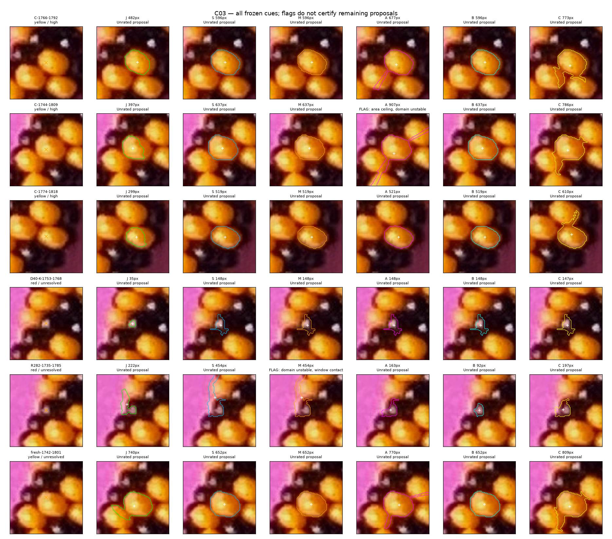
Native97 anchor · Native161 groupC04 — central-crossing-yellow
Central yellow group remains photographically separated at the anchor. A weak fresh885px cue still includes both sides of a dark-profile pair and is flagged. Marker repair is not a complete merger solution.
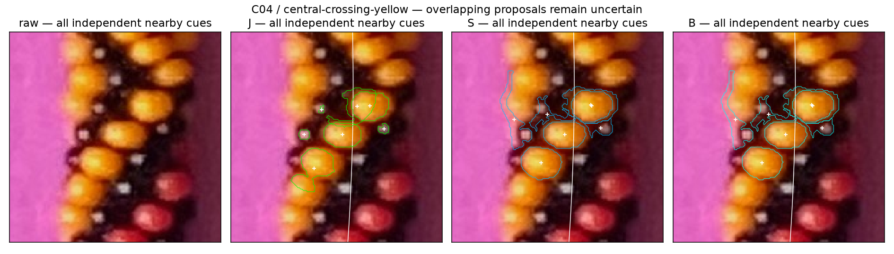
Anchor alternatives, all-cue atlas, profiles and native crops
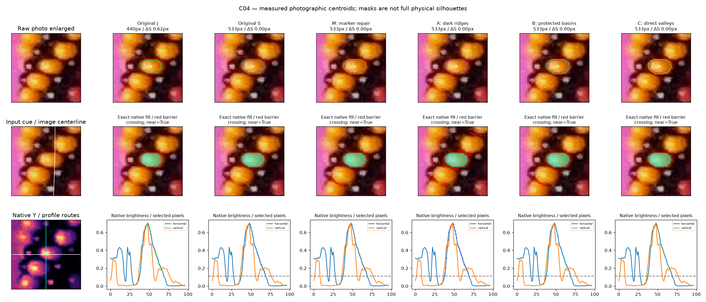
| Method | Native px | + / − vs S | Centroid ΔS | Boundary ∇Y | Geometry / status |
|---|
| J | 440 | +0 / −93 | 0.62px | 0.0682 | crossing; unrated |
| S | 533 | +0 / −0 | 0.00px | 0.0596 | crossing; unrated |
| M | 533 | +0 / −0 | 0.00px | 0.0596 | crossing; unrated |
| A | 533 | +0 / −0 | 0.00px | 0.0596 | crossing; unrated |
| B | 533 | +0 / −0 | 0.00px | 0.0596 | crossing; unrated |
| C | 533 | +0 / −0 | 0.00px | 0.0596 | crossing; unrated |
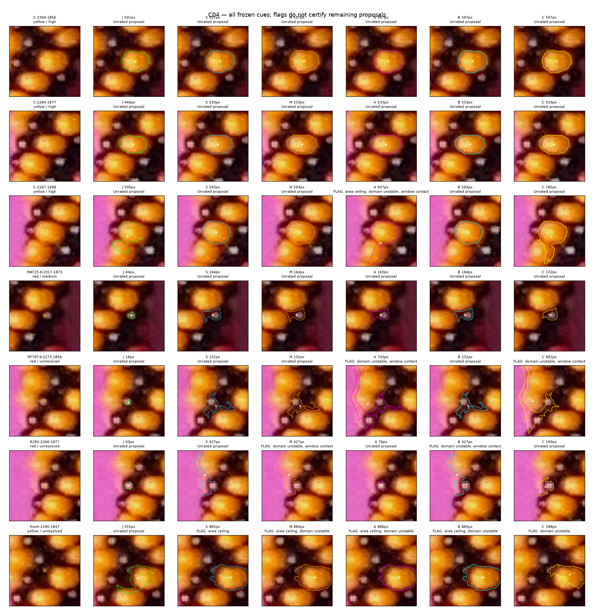
Native97 anchor · Native161 groupC05 — central-red-highlight
Strong-highlight red: M/B preserve527px, J248px. A1134px reaches neighboring reds and is rejected; C742px leaves spurious extensions. Central failure counts against A/C.
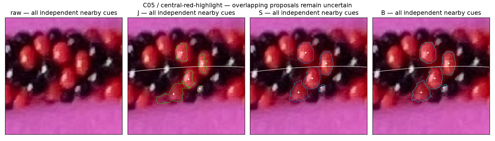
Anchor alternatives, all-cue atlas, profiles and native crops
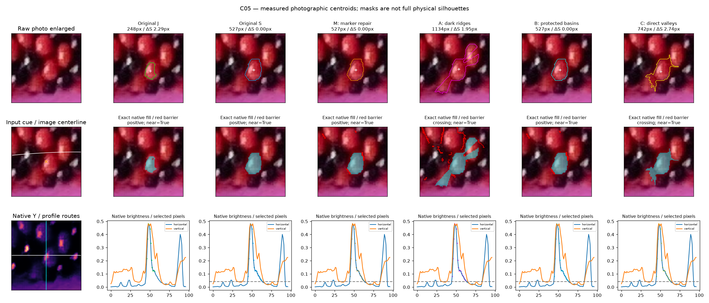
| Method | Native px | + / − vs S | Centroid ΔS | Boundary ∇Y | Geometry / status |
|---|
| J | 248 | +0 / −279 | 2.29px | 0.0363 | positive; unrated |
| S | 527 | +0 / −0 | 0.00px | 0.0215 | positive; unrated |
| M | 527 | +0 / −0 | 0.00px | 0.0215 | positive; unrated |
| A | 1134 | +608 / −1 | 1.95px | 0.0217 | crossing; area ceiling |
| B | 527 | +0 / −0 | 0.00px | 0.0215 | positive; unrated |
| C | 742 | +215 / −0 | 2.74px | 0.0184 | crossing; unrated |
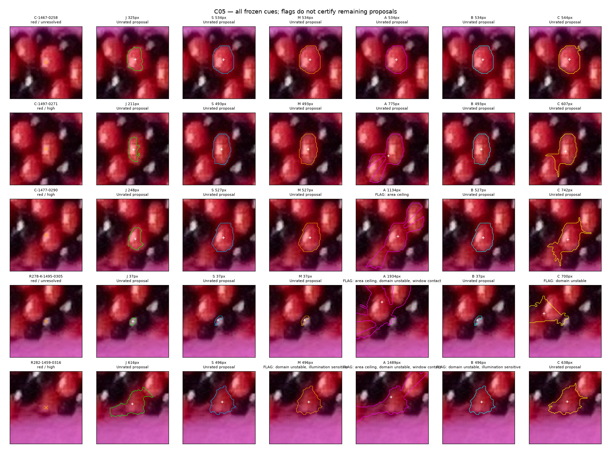
Native97 anchor · Native161 groupC06 — central-same-color-dark-seam
Same-color central pair: M/B preserve441px anchor and neighboring interiors. Multiple cues still duplicate one proposal; a1086px nearby support is flagged.
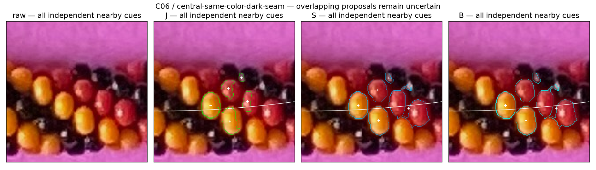
Anchor alternatives, all-cue atlas, profiles and native crops
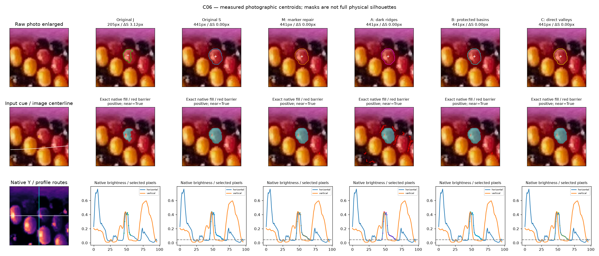
| Method | Native px | + / − vs S | Centroid ΔS | Boundary ∇Y | Geometry / status |
|---|
| J | 205 | +0 / −236 | 3.12px | 0.0514 | positive; unrated |
| S | 441 | +0 / −0 | 0.00px | 0.0325 | positive; unrated |
| M | 441 | +0 / −0 | 0.00px | 0.0325 | positive; unrated |
| A | 441 | +0 / −0 | 0.00px | 0.0325 | positive; unrated |
| B | 441 | +0 / −0 | 0.00px | 0.0325 | positive; unrated |
| C | 441 | +0 / −0 | 0.00px | 0.0325 | positive; unrated |
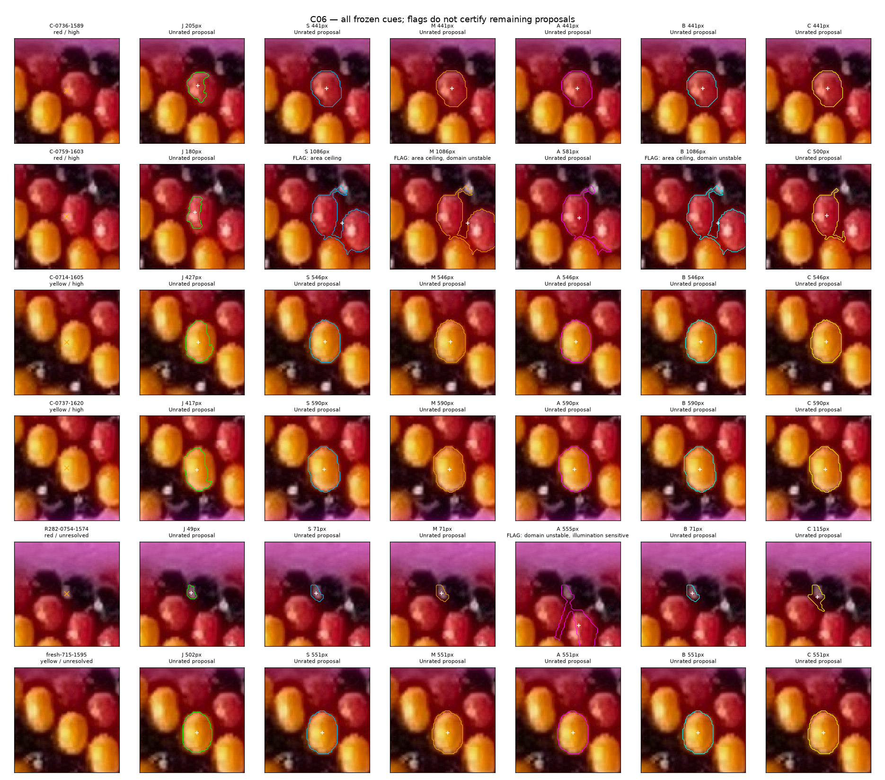
Native97 anchor · Native161 groupC07 — central-opposite-side-near
Opposite-side selection: M/B preserve384px anchor. Four near proposals collapse to two overlap groups; do not report four recovered beads. Compact-support side can change as supported material grows.
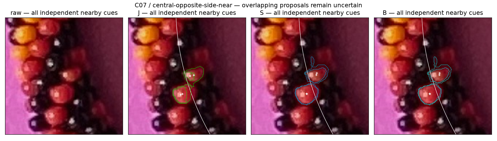
Anchor alternatives, all-cue atlas, profiles and native crops
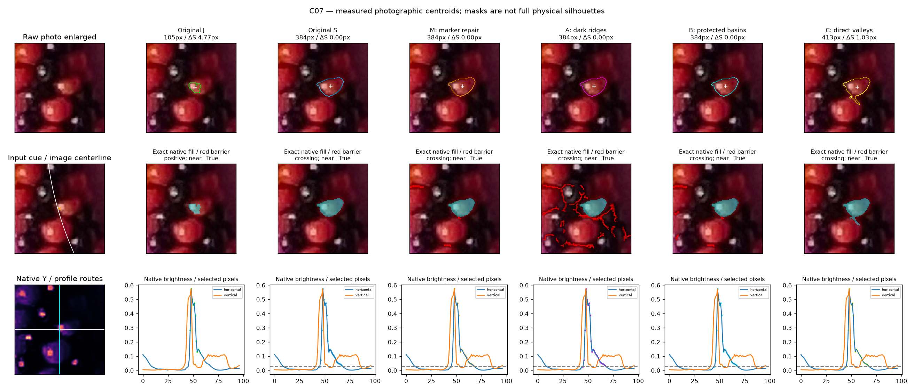
| Method | Native px | + / − vs S | Centroid ΔS | Boundary ∇Y | Geometry / status |
|---|
| J | 105 | +0 / −279 | 4.77px | 0.0717 | positive; unrated |
| S | 384 | +0 / −0 | 0.00px | 0.0162 | crossing; unrated |
| M | 384 | +0 / −0 | 0.00px | 0.0162 | crossing; unrated |
| A | 384 | +0 / −0 | 0.00px | 0.0162 | crossing; unrated |
| B | 384 | +0 / −0 | 0.00px | 0.0162 | crossing; unrated |
| C | 413 | +29 / −0 | 1.03px | 0.0150 | crossing; unrated |
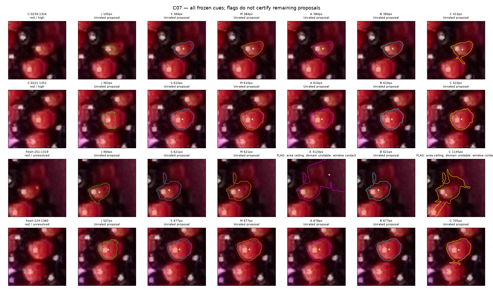
Native97 anchor · Native161 groupC08 — central-near-additional
Additional central yellow: M/B preserve470px anchor. Fresh weak red cue expands1129px into uncertain shaded material and is flagged, not counted as new recovery.
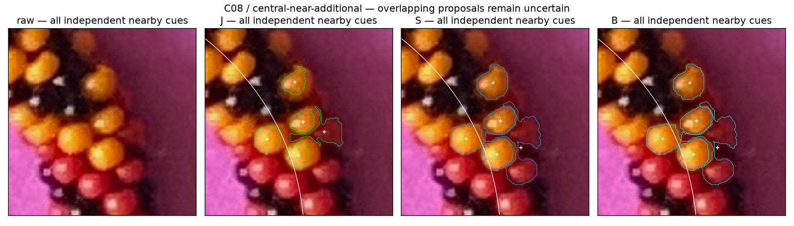
Anchor alternatives, all-cue atlas, profiles and native crops
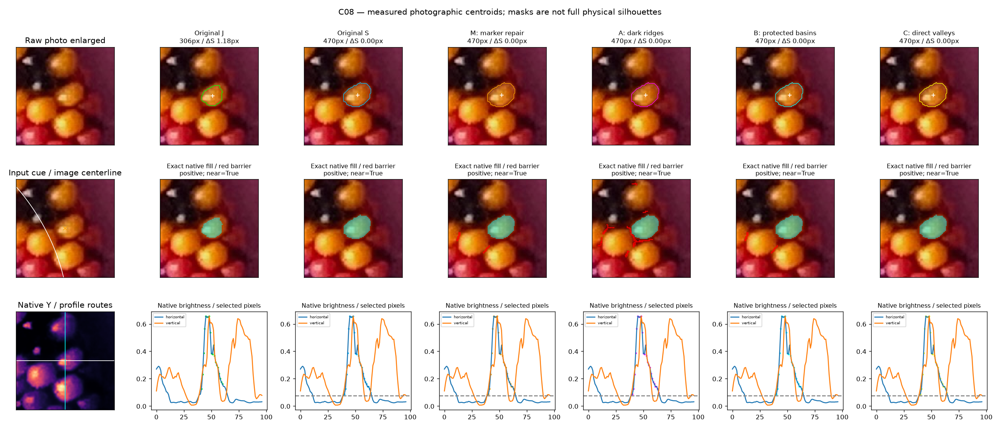
| Method | Native px | + / − vs S | Centroid ΔS | Boundary ∇Y | Geometry / status |
|---|
| J | 306 | +0 / −164 | 1.18px | 0.0580 | positive; unrated |
| S | 470 | +0 / −0 | 0.00px | 0.0377 | positive; unrated |
| M | 470 | +0 / −0 | 0.00px | 0.0377 | positive; unrated |
| A | 470 | +0 / −0 | 0.00px | 0.0377 | positive; unrated |
| B | 470 | +0 / −0 | 0.00px | 0.0377 | positive; unrated |
| C | 470 | +0 / −0 | 0.00px | 0.0377 | positive; unrated |
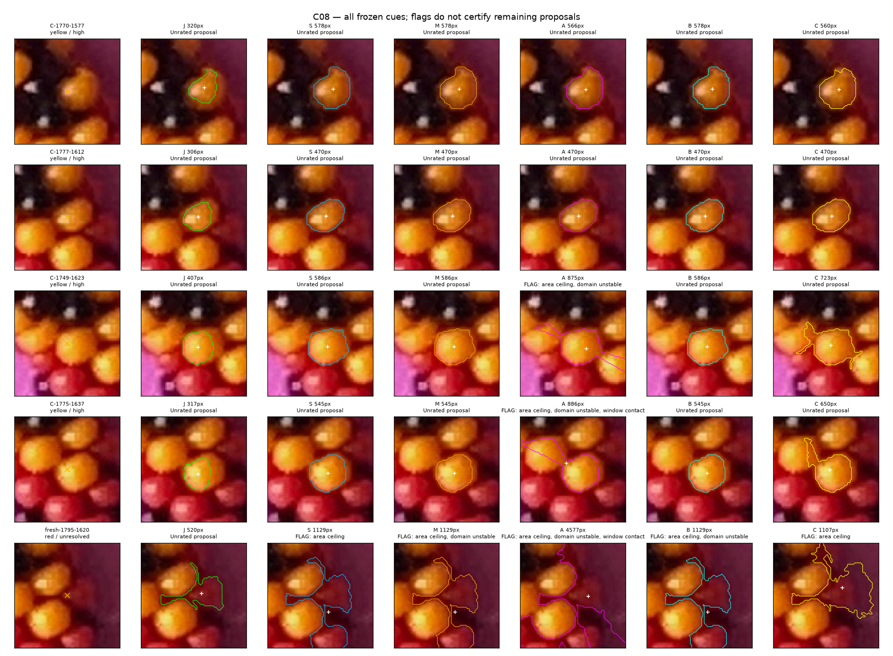
Native97 anchor · Native161 groupC09 — secondary-clear-edge-red
Secondary clear-edge red: M/B preserve319px; difficult surrounding edge material need not be resolved. No tuning on this edge example.
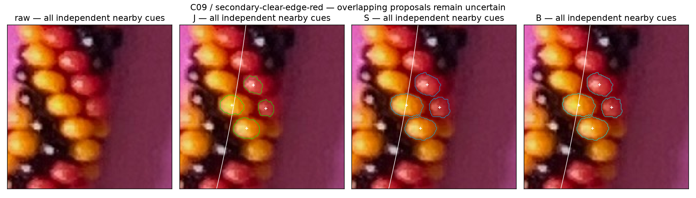
Anchor alternatives, all-cue atlas, profiles and native crops
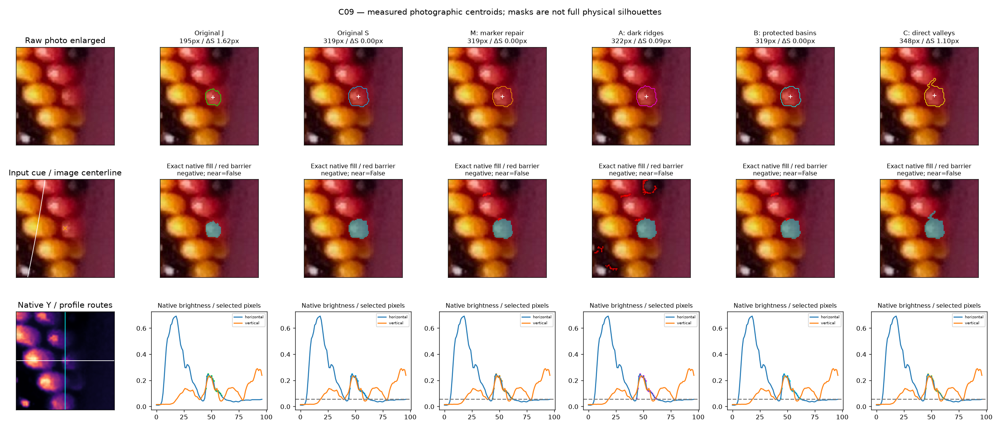
| Method | Native px | + / − vs S | Centroid ΔS | Boundary ∇Y | Geometry / status |
|---|
| J | 195 | +0 / −124 | 1.62px | 0.0248 | negative; unrated |
| S | 319 | +0 / −0 | 0.00px | 0.0153 | negative; unrated |
| M | 319 | +0 / −0 | 0.00px | 0.0153 | negative; unrated |
| A | 322 | +3 / −0 | 0.09px | 0.0152 | negative; unrated |
| B | 319 | +0 / −0 | 0.00px | 0.0153 | negative; unrated |
| C | 348 | +29 / −0 | 1.10px | 0.0145 | negative; unrated |
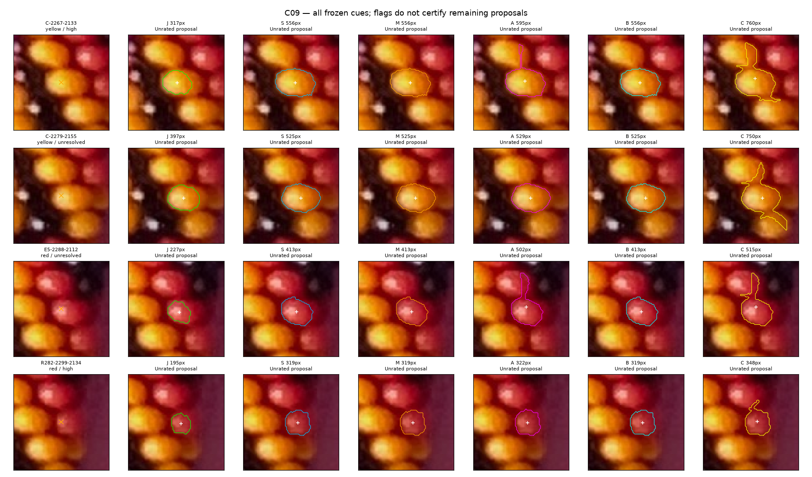
Native97 anchor · Native161 groupC10 — secondary-clear-edge-yellow
Secondary clear-edge yellow: M/B preserve437px. A594px is domain/illumination-sensitive. Nearby red995px remains flagged; no central quality tradeoff to rescue it.
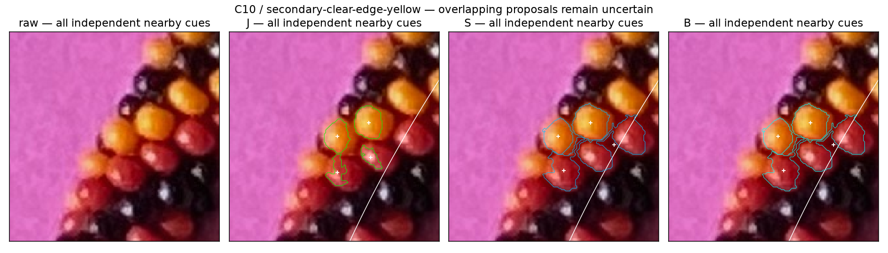
Anchor alternatives, all-cue atlas, profiles and native crops
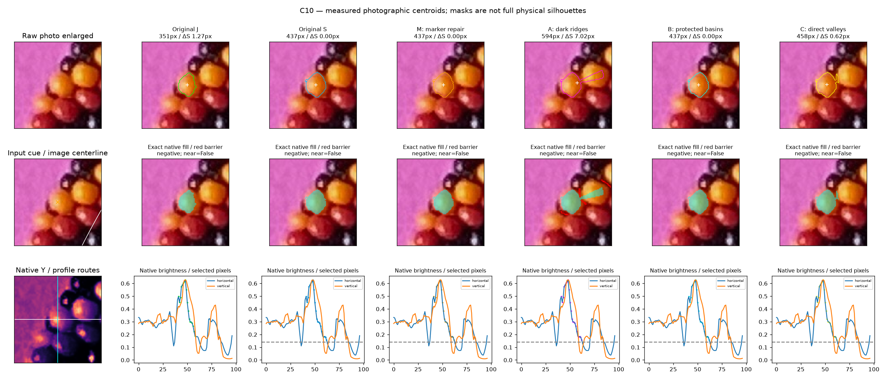
| Method | Native px | + / − vs S | Centroid ΔS | Boundary ∇Y | Geometry / status |
|---|
| J | 351 | +0 / −86 | 1.27px | 0.0386 | negative; unrated |
| S | 437 | +0 / −0 | 0.00px | 0.0395 | negative; unrated |
| M | 437 | +0 / −0 | 0.00px | 0.0395 | negative; unrated |
| A | 594 | +157 / −0 | 7.02px | 0.0373 | negative; domain unstable, illumination sensitive |
| B | 437 | +0 / −0 | 0.00px | 0.0395 | negative; unrated |
| C | 458 | +21 / −0 | 0.62px | 0.0430 | negative; unrated |
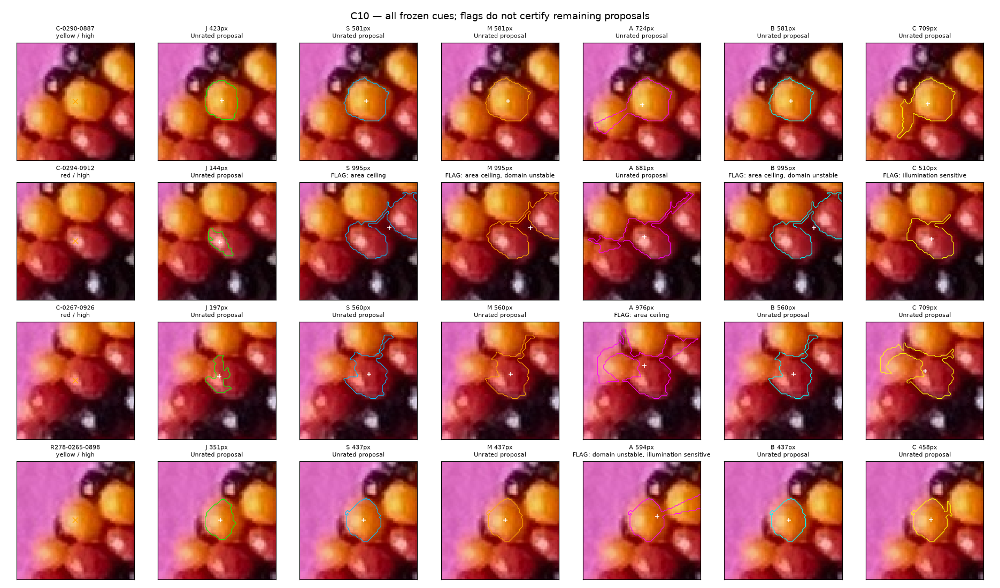
Native97 anchor · Native161 groupPreserved weak-cue difference: C02
Central red anchor remains577px in M/B. C grows806px. A separate weak interstice cue merges neighbors in M/S; B reduces it to131px but is illumination-sensitive. Do not certify that tinted highlight as a red bead.
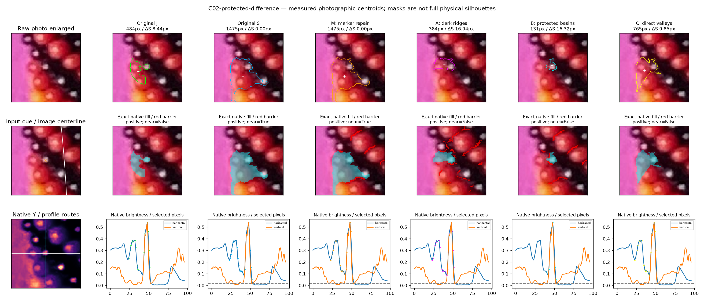
Exact native crop
Preserved weak-cue difference: C03
Central yellow anchor remains596px in M/B. A extends a thin route toward the lower-left yellow; C adds neighboring material. B’s separate92px edge/interstice proposal remains color/identity uncertain.
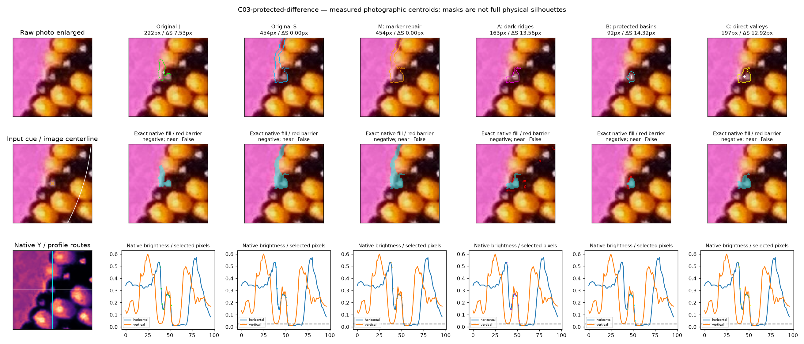
Exact native crop
Shading counterexample — stronger protection can fail
B splits the shallow-shading control; M preserves it. All methods separate the deep valley, but identical pixels could be deep texture on one body. That ownership ambiguity cannot be solved by shape or a brightness threshold alone.
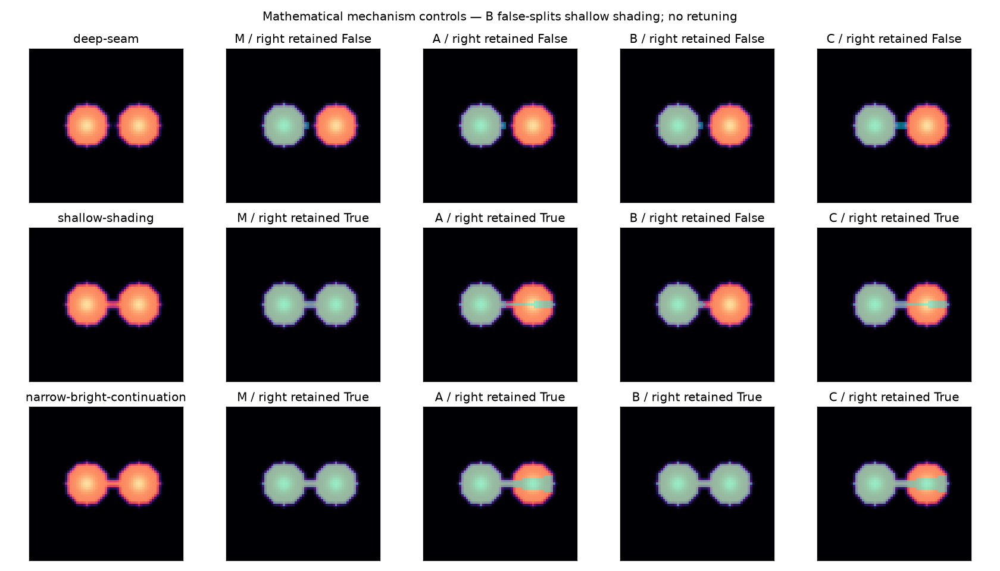
Fresh physical rendering controls — limited transfer
Four certified noninterpenetrating POV scenes,41 automatic colored cues. Identity rasters opened only after saved inference. Purity ≥95% is synthetic evaluation, not real-photo calibration. These results remain poor and do not establish general reliable ownership.
| Method | Within870 | Pure / eligible proposals | Distinct recovered /74 | Duplicate pure proposals |
|---|
| J | 38 | 19/38 | 17/74 | 2 |
| S | 22 | 16/22 | 13/74 | 3 |
| M | 22 | 16/22 | 13/74 | 3 |
| A | 31 | 17/31 | 15/74 | 2 |
| B | 27 | 18/27 | 14/74 | 4 |
| C | 27 | 19/27 | 17/74 | 2 |
All four rendered scenes and inferred supports
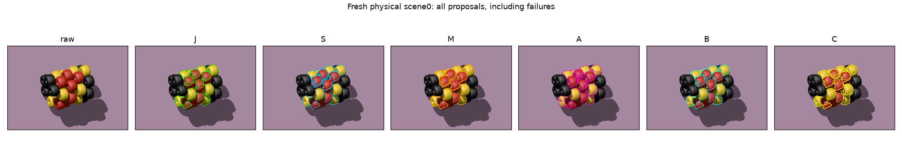
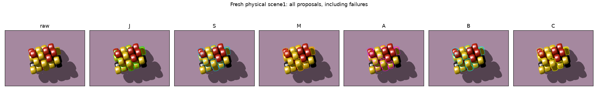
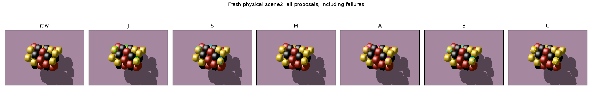
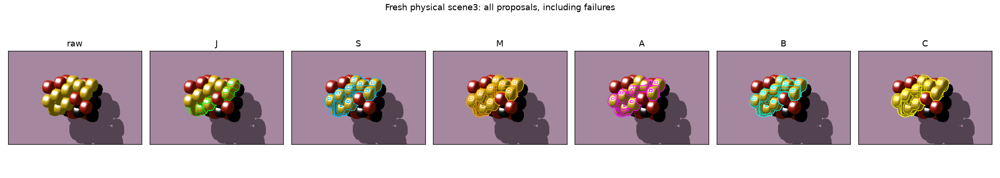
P6 — black specular reflections unchanged
All144 native-mask / subpixel-contour / peak replays match R285 exactly (48 features × R1/R2/R4). Upper and lower supports overlap0px in each method. Retain R2, keep R1/R4 available. The lower feature remains a secondary reflection with unknown physical ownership.
 Exact native49 crop
Exact native49 crop
 Exact native49 crop
Exact native49 crop
Recommendation and stopping point
Prefer M’s context-supported marker repair for the next user-approved Phase1 direction. Keep B as an uncertain alternative; do not adopt its stronger protection globally after its shading failure. Retain J as a useful control for P1/P3. A/C are preserved failed candidates. Difficult edges need not be rescued.
No production inventory change, global fit or pattern search. Await user assessment of P5/P2 and independent failures before any next round.